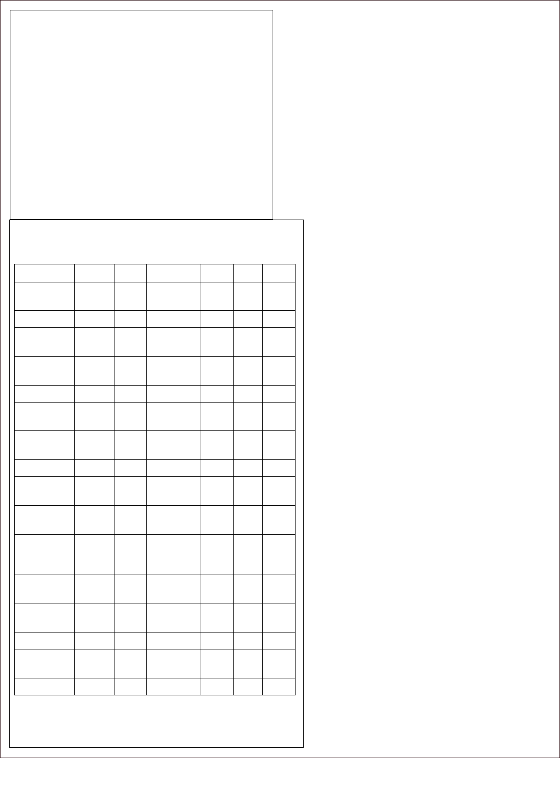

4 ADVANCES, Winter 2013, VOL. 27, NO. 1
Mainguy—Spiritual Transformation and Medical Outcome
Barbara Mainguy, MA, MFA, is creative arts director, Coyote
Institute for Studies of Change and Transformation,
Brattleboro, Vermont; Michael Valenti Pickren, MA, PsyD,
is a postdoctoral fellow in the Department of Psychology,
Hawaii School of Professional Psychology at Argosy
University, Honolulu. Lewis Mehl-Madrona, MD, PhD, is
core faculty in the Clinical Psychology Program at Union
Institute & University, Brattleboro, Vermont, and executive
director at the Coyote Institute for Studies of Change and
Transformation, South Burlington, Vermont.
Corresponding author: Lewis Mehl-Madrona, MD, PhD
E-mail address: mehlmadrona@gmail.com
Relationships Between Level of Spiritual
Transformation and Medical Outcome
Barbara Mainguy, MA, MFA; Michael Valenti Pickren, MA, PsyD; Lewis Mehl-Madrona, MD, PhD
ORIGINAL RESEARCH
ABSTRACT
Context • culturally dened healers operate in most of
the world, and to various degrees, blend traditional heal-
ing practices with those of the dominant religion in the
region. ey practice more or less openly and more or less
in conjunction with science-based health professionals.
Nonindigenous peoples are seeking out these healers more
oen, especially for conditions that carry dire prognoses,
such as cancer, and usually aer science-based medicine
has failed. Little is known about the medical outcomes of
people who seek Native North American healing, which
is thought by its practitioners to work largely through
spiritual means.
Objective • is study explored the narratives produced
through interviews and writings of people working with
traditional Aboriginal healers in Canada to assess the degree
of spiritual transformation and to determine whether a
relationship might exist between that transformation and
subsequent changes in medical outcome.
Design • Before and aer participation in traditional
healing practices, participants were interviewed within a
narrative inquiry framework and also wrote stories about
their lives, their experiences of working with traditional
healers, and the changes that the interactions produced.
e current study used a variety of traditional healers who
lived in Alberta, Saskatchewan, and Manitoba.
Setting • Urban and Rural Reserves of the Canadian
Prairie Provinces.
Participants • One hundred y non-Native individuals
requested help from Dr Mehl-Madrona in nding
traditional Aboriginal healing and spiritual practitioners
and agreed to participate in this study of the eects of their
work with the healers.
Intervention • e healers used methods derived from
their specic cultural traditions, though all commonly
used storytelling, ese methods included traditional
Aboriginal ceremonies and sweat lodge ceremonies, as well
as other diagnosing ceremonies, such as the shaking tent
among the Ojibway or the yuwipi ceremony of the Dakota,
Nakota, and Lakota, and sacred-pipe-related practices.
Outcome Measures • e research team used a combination
of grounded theory modied from a critical constructivist
point of view and narrative analysis to rate the degree of
spiritual transformation experienced. Medical outcome
was measured by a 5-point Likert scale and was conrmed
with medical practitioners and other family members.
Results • A 5-year follow-up revealed that 44 of the
reports were assessed as showing profound levels of
persistent spiritual transformation, dened as a sudden
and powerful improvement in the spiritual dimension of
their lives. e level of spiritual transformation achieved
through interaction with healers was associated in a dose-
response relationship with subsequent improvement in
medical illness in 134 of 155 people (P < .0001).
Conclusions • e degree and intensity of spiritual
transformation appeared related to the degree of physical
and psychological change among people interacting with
traditional North American Indigenous healers. Further
research is warranted. (Adv Mind Body Med. 2013;27(1):4-
11.)
ADVANCES, Winter 2013, VOL. 27. NO. 1 5
Mainguy—Spiritual Transformation and Medical Outcome
T
he report of the Royal Commission on Aboriginal
Peoples in Canada states that the participation of
Indigenous peoples in health care applying Indigenous
knowledge and tradition as they consider appropriate should
be the basis for developing policy for improved health.
1,i
Little data is available on outcomes of people working
with traditional North American healers using Indigenous
knowledge systems for healing. Even less is known about
what happens when people from outside traditional cultures
interact with traditional healers. is study aims to ll some
of that gap.
“Long before the existence of science-based health care,
culturally dened healers served people within communities.
e functions of healing oen blended with those of spiritual
leadership.”
2
Culturally dened healers continue to operate in
most of the world, including North America, and to various
degrees, depending upon the healer and the community,
they blend traditional healing practices with those of the
dominant religion in the region (primarily Christianity,
Islam, Buddhism, and Hinduism). Varying by region, healers
practice more or less openly and more or less in conjunction
with science-based health professionals. Nonindigenous
peoples are seeking out these healers more oen, especially
for conditions that carry dire prognoses, such as cancer,
and usually aer science-based medicine has failed.
3
Engels
4
helped to explain this phenomenon in his writings about
the implicit assumptions of science-based medicine, which
actually may not apply to chronic illness.
5-7
Pargament argues that people are goal-directed, striving
for the things that are signicant to them: psychological, social,
physical, and material.
8
Spirituality refers to those aspects
of this striving that relate to God, the Divine, the Universe,
the Largest Whole, Higher Beings, and/or those things that
people believe to be sacred. Spirituality is a process: a verb
and not a noun, active instead of passive, in motion rather
than static. Pargament describes three processes in the search
for the sacred: (1) discovery (ie, searching or pursuing); (2)
conservation (ie, sustaining oneself in times of crisis and
preserving a sense of meaning through spiritual beliefs and
practices); and (3) transformation (ie, profound change or,
giving up some sources of meaning and discovering new
sources of signicance as changes take place in life). Stories
abound regarding healing and curing that occurred in
association with spiritual transformation, both in dominant
religions and in Indigenous spirituality.
SpiRiTuAliTy And Coping
Spirituality represents one way to improve coping
strategies and is also a component of quality of life.
9
Spiritual
and existential well-being is associated with higher quality
of life, better physical health, and enjoyment of life even
as individuals experience symptoms from disease or its
treatment.
9-13
Fulllment of spiritual and existential needs
and restoration of spiritual equilibrium are correlated with
statistically signicant improvement in resilience and level of
reported personal growth.
14-17
Studies of Spiritual Healing
Questions about religious or spiritual healing—the
extent to which it occurs and the degree to which it aects
physiology—also are important. Csordas conceived religious
healing as a form of discourse embodying a cultural rhetoric
and capable of performing three essential persuasive tasks;
that is, it creates (1) a predisposition to be healed, (2) the
experience of spiritual empowerment, and (3) a concrete
perception of personal transformation.
18
is threefold
process activates and controls healing processes internal
to the person seeking healing and either redirects his or
her attention toward new aspects of his or her actions and
experiences or alters the manner in which he or she attends
to accustomed aspects of those actions and experiences. e
result is the creation of both a new worldview and a new
sense of spiritual meaning for the person. ough Csordas
was studying Catholic Pentecostals, the analysis is equally
applicable to Aboriginal healing and directs our attention
to those aspects of the treatment’s environment and the
interaction with the healer that foster these three persuasive
tasks.
Studies of Spiritual Transformation
Within the broad area of spirituality and spiritual healing,
an important area for further research is that of spiritual
transformation, which refers primarily to a fundamental change
in the signicance of the place or the character of the sacred in
an individual’s life, and secondarily, to a fundamental change
in the pathways that a person takes to the sacred.
8
Spiritual
transformation has a substantive focus upon the sacred as
the individual perceives it and includes a profound change
in a person’s sense of higher purpose and meaning. Spiritual
transformation oen involves a reorganization of religious
values.
19
Recent research has suggested that the specic ways
in which people rediscover meaning in times of crisis may
be less important than the process itself, and the ability to
ascribe new meaning to a changed world through spiritual
transformation, religious conversion, or existential change may
be more signicant than the specic content.
20
Spiritual change
and spiritual transformation could be important in improving
physical health and decreasing incidence of illness.
Hardy studied the operative cognitive and aective
elements in 3000 cases of spiritual transformation.
21
Spiritual
transformation was most commonly preceded by (1) being
in a state of depression and despair (183.7 per 1000); (2)
artistic experiences, such as being stimulated by reading great
literature, being moved by attending a dramatic performance,
or by existentially confronting the possibility of death (82 per
1000); (3) having an illness (80 per 1000); and (4) listening to
music (56.7 per 1000). (Hardy distinguished music from other
artistic performances.) Spiritual transformation provided
various benets to people: (1) a sense of security, protection,
Because this study was done in Canada, we will use the Canadian convention of i.
referring to the traditional and original peoples of North America as Aboriginal
instead of using the more common US term Native American.

6 ADVANCES, Winter 2013, VOL. 27, NO. 1
Mainguy—Spiritual Transformation and Medical Outcome
and peace; (2) a sense of joy, happiness, and well-being; (3) a
sense of certainty, clarity, and enlightenment; (4) a sense of
guidance, vocation, and inspiration; and (5) a sense of presence
(spiritual, other). e consequences of the experience for the
3000 cases were (1) a sense of purpose or new meaning in life
(184.7 per 1000); (2) changes in attitudes toward others (77 per
1000); and (3) changes in religious beliefs (38.7 per 1000).
Garrett used the language of spiritual transformation to
explain recovery from anorexia nervosa, noting that the most
recovered anorexics question prevailing medical denitions of
anorexia as well as the clinical criteria for recovery.
22
Garrett
understood anorexia and recovery to be the negative and
positive phases, respectively, of a ritual of self-transformation.
In Western culture, where appropriate myths and rituals for re-
entering the ordinary world are not readily available following
a period of symbolic fasting, it is not surprising that recovery
from anorexia is not automatic. e study’s participants
referred to anorexia as a spiritual quest. Recovery involved a
rediscovery (or creation) of a threefold connection: (1) to the
self, (2) to others, and (3) to nature and/or the spiritual realm.
ese connections are the dening features of spirituality. e
negative phase of the ritualistic quest (anorexia) involves a
confrontation with the inevitability of death as a condition of
the positive phase (recovery), in which people actively choose
life. Garrett saw recovery from anorexia as constituting an active
and metaphorical rebellion against forces of social control with
anorexia being seen as an exaggeration of these forces (the
demand to be thin and attractive, etc). Specic rituals aect
the self-transformation from suering to recovery, a series of
steps as applicable to depression as to anorexia.
Studies of Religious Practice
Religion, which is not synonymous with spirituality, has
shown positive correlations with good health,
8,23-25
although few
studies’ designs used treatment outcomes to compare religious
or spiritual interventions with their secular counterparts.
26
ese investigations included an 8-year study that evaluated
data from the Centers for Disease Control and Prevention’s
(CDC) National Health Interview Surveys (NHIS).
27
e
study showed that an additional 8 years of life expectancy was
associated with regularly attending religious services compared
with never attending, even aer adjustment for initial health
status and a large set of social and behavioral risk factors.
ese eects of religious attendance were consistent across all
ages, genders, and racial and ethnic groups and for all major
causes of death. A second mortality study from Utah found 3
to 7 times as many suicides among male nonmembers and less
active members of the Mormon Church as compared to active
members.
28
A third study of 87 elderly inpatients diagnosed
with depression found that those with higher levels of intrinsic
religiosity had signicantly shorter times to remission than
those who were less religious. For every 10-point increase in
their measure of intrinsic religiosity on a 50-point scale, the
time to recovery increased by 70%.
29
In a regional US sample
of elderly people, frequent attendance of religious services
was a strong predictor of better physical functioning at yearly
evaluations for up to 6 years later. Some groups were followed
up to 12 years with persistence of the eect.
30
Publication of more extensive reviews has occurred.
31-
32
Idler discussed the methodological issues that have led to
some apparent inconsistencies in the literature as well as the
measurement problems inherent in studies of spirituality
and religiosity.
33
No studies have been done with Aboriginal
populations or populations who attend traditional ceremonies
to relate religiosity to length of life, and few studies have
evaluated the eects of daily prayer among Aboriginal peoples.
Studies have conrmed the importance of religion to people in
the United States; 73% of Americans aged 61 years and older
pray at least once every day
34
compared with 54% overall.
35,36
Many Americans believe that a connection exists between
religion and health: 79% believe that God answers prayers
for healing from incurable diseases,
36
25% pray regularly for
healing for their own illnesses,
37
and 64% think doctors should
pray with a patient if the patient requests it.
38
e eects of
prayer, however, are also understudied and rarely are studied
as a bona de intervention.
Aboriginal Perspective
e Aboriginal view of health and disease diers from
that of mainstream Anglo-European culture, which views the
two concepts as distinct opposites. Aboriginal cultures tend
to view health and illness as facets of life, with an emphasis
on the ideas that health is the result of harmony and balance
and that healing is the move to restore harmony and balance
when something disturbs them. Disturbances can occur
in all aspects of relationships to multiple layers of reality,
including the spiritual. Disease is not to be avoided, blocked,
or suppressed. Rather, Aboriginal cultures appreciate it as part
of a process of personal and spiritual transformation. People
become ill because something is out of harmony and balance
in their relationships. is imbalance can occur in a wide range
of areas, including relationships with food, the environment,
family members, the spiritual world, ancestors, the Creator,
work, and more.
Disease is a meaningful state that helps people heal.
Health problems lead to a search for meaning and purpose,
for living more fully and strongly within a simultaneously
geographical and spiritual environment. In this view, diabetes
becomes an issue of meaning. e World Health Organization
(WHO) endorses this categorization and makes it clear that
such diseases of meaning will become the major causes of
suering and death worldwide in this century.
39
To deal with
these diseases, WHO asserts that the world will need more
than the usual biomedical model of healing. Individuals
will need approaches that reconstitute meaning and lead to
dierent types of relationships between people and between
people and the environment, both animate and inanimate.
is approach can lead to new bridges between science and
spirituality, antiquity and modernity, and Indigenous and
modern cultures.
Traditional healing takes the form of mutually helpful
interactions
40
rather than an expert-driven top-down protocol.

ADVANCES, Winter 2013, VOL. 27. NO. 1 7
Mainguy—Spiritual Transformation and Medical Outcome
Help oen occurs among participants as they wait together to
be “doctored” by the traditional healer or wait for stones to heat
in sweat lodge ceremonies. e culture of traditional North
American healing is more group focused than individually
oriented. It more resembles Alcoholics Anonymous than
conventional medicine. Alcoholics Anonymous has been shown
to be eective with regard to spirituality and social support.
41
Stevenson
42
has documented the stories Saskatchewan healing
elders tell about their practices and views on health and illness,
curing and disease, and their relatedness to conventional
medicine. Linkleter
43
has written in-depth about 10 Canadian
traditional Indigenous healers, their philosophies of approach,
their training, and their ways of interfacing with conventional
Canadian culture.
MeThodS
Participants
Since 1980, Dr Mehl-Madrona, a member of this study’s
research team, has helped people who are seeking traditional
healing to make contact with healers and to immerse themselves
in local healing practices of a particular community. He has
previously published the results of a study involving 105 people
who participated in traditional Aboriginal healing.
3
e study’s nonrandomized group of 150 non-Aboriginal
participants had requested that Mehl-Madrona help them nd
and connect with traditional Aboriginal healers. Cancer was
the most common reason people sought a traditional healer
(Table 1), followed by anxiety-related complications. e study’s
participants represented an enriched population, motivated
to seek spiritual change, and therefore, more amenable to it
than a general, naïve population. In that respect, the study is
representative of seekers rather than all people.
e team randomly selected participants from an electronic
health record database to match groups of participants with
the same disease for age, socioeconomic status (based upon
type of insurance), and gender. Control groups included 150
people undertaking a spiritual retreat and 1200 comparison
participants (100 for each condition). Comparison participants
received conventional health care. ey also may have received
alternative health care or traditional healing, but the study did
not provide that information. us, a bias existed that could
reduce the signicance of the work with traditional healers
since members of the comparison group also could have
worked with other healers. e research team assessed the
selected participants for outcomes over 5 years using the same
scale as the team used for retreat participants. e database
used provided no identifying data whatsoever.
Healers
e current study used a variety of traditional healers
known to Mehl-Madrona from his work in the Canadian
Prairie provinces. Not all were part of the tribes originally
found in those areas, but those tribes (Ojibway, Nakota,
Dakota, Lakota, Cree, Dine, Blood, and Blackfoot) were
represented. ough a well-dened set of procedures and
interventions characterize various Aboriginal healing
systems, healers typically apply them on an individualized
basis.
3,5,44
Design
Before participants met with the traditional healers, they
were interviewed and asked to write two stories. To prepare
participants for this writing, the research team provided them
with questions as a guide (Appendix A). e team reviewed
each participant’s answers and discussed them with him or her,
making additional notes about the answers. Participants’ rst
task was writing the story of their lives. e second task was
writing the story of their illnesses from the perspective of the
disease. Subsequent to participants’ work with the traditional
healers, the research team interviewed the participants again
and asked them to repeat this writing task and then compared
the two sets of stories. e team also asked questions to esh
out the story of what happened during the encounters with the
healers (Appendix B). eir stories provided rich information
about the process of spiritual transformation and the ways in
which it may be associated with improvements in physical
health.
Participants usually attended at least one sweat lodge
ceremony and other ceremonies unique to the involved healers.
Mehl-Madrona sometimes attended as well. Participants
were asked to keep a journal and were invited to use artistic
media to document their experiences. Aboriginal practices
usually included (1) storytelling, (2) daily prayer ceremonies
and rituals, including some usage of the sacred pipe, and (3)
sweat lodge. Other ceremonies were unique to particular
tribes, including the luwonpi and yuwipi (Lakota, Nakota, and
Dakota), the shaking tent ceremony (Ojibway), and the vision
quest and the Sun Dance (most Plains tribes).
ouTCoMe MeASuReS
Mehl-Madrona et al provide a detailed review of the
analytic methods, rating teams, and psychometric properties
employed in this study.
45
Using modied grounded theory and
dimensional analysis, they found the following categories of
spiritual transformation:
Report of major changes in sense of self, beliefs, and 1.
quality of life.
Increased sense of security, protection, and peace. 2.
Increased sense of joy, happiness, and well-being. 3.
Increased sense of belongingness in the Universe; a sense 4.
of containment; a sense of connectedness with the spiritual
world.
Increased sense of guidance and inspiration from spiritual 5.
sources.
Increased faith and hope. 6.
Increased sense of spirituality manifested by: 7.
Prayer more important. a.
Connection to Nature more important. b.
Stronger desire to feel close to God, Spirit, etc. c.

8 ADVANCES, Winter 2013, VOL. 27, NO. 1
Mainguy—Spiritual Transformation and Medical Outcome
outcomes as in Mehl-Madrona’s similar study.
3
It
consisted of a 5-point Likert scale, ranging from Cured
(+2), Better (+1), No dierent (0), Worse (–1), or Dead
(–2). e research team made the comparisons using
log-likelihood methods and chi-squares. e team
calculated the scores by multiplying the outcome scores
by the number of participants for each group and then
averaging across all participants.
Results
e median age decile for participants was 40 to 49
years with a total number of 155 (Table 1). At 5-year
follow up interviews, 36.1% of participants reported
resolution of their health problem, 35.5% reported
improvement, 14.8% reported no change, 5.2% reported
worsening of the condition, while 9.0% had succumbed
to their illness (Table 2). Cancer was the most common
reason why people sought a traditional healer, followed
by anxiety disorders, autoimmune disorders, and
arteriosclerotic cardiovascular diseases.
To benchmark these results we compared them to
similar patients randomly selected from an electronic
database without identifying data who had the
same diagnosis, age within the same decile, sex, and
educational level (a marker of socioeconomic status).
ere were 155 people seeking traditional healers and
1500 comparison patients (100 for each condition).
Comparisons were made with log-likelihood methods
and chi-squares. e score was calculated by multiplying
the outcome score by the number of patients and then
averaging across all patients. When outcomes for people
seeking traditional healing were compared to outcomes
of patients who were receiving conventional treatments
for the same illnesses, we saw that the people seeking
traditional healing were certainly no worse o than the
people receiving conventional care. We expected people
seeking traditional healing to do better than those
receiving conventional care because of their motivation
and their eort to nd healers. It does appear that
these 156 patients did not suer as a result of seeking
traditional healing.
Table 1. Age Spread of People Seeking Traditional
Healing
Ages of Clients Number of Clients
10–19 4
20–29 28
30–39 40
40–49 49
50–59 22
60–69 8
70–79 3
80–89 1
___________________________________
Total 155
Table 2. Medical Outcomes Aer 5 Years
“Cured” Better “e Same” Worse Death Total
Alcohol and
drugs
0 0 1 0 0 1
Schizophrenia 0 1 0 0 0 1
Respiratory
disease
2 6 0 1 0 9
Severe back
pain
0 1 0 0 0 1
Cancer 20 9 4 3 13 49
Chronic
fatigue
2 7 1 0 0 10
Chronic Lyme
disease
0 0 0 1 0 1
Diabetes 0 8 1 0 0 9
Mood
disorders
8 3 2 0 0 13
Eating disor-
der
0 2 0 0 0 2
ASCVD,
including
hypertension
4 4 3 1 1 13
Anxiety disor-
ders
7 6 5 1 0 19
Gynecological
disorders
6 2 2 1 0 11
Infertility 1 0 0 0 0 1
Autoimmune
disorders
6 6 4 0 0 16
Totals 56 55 23 8 14 155
Measurement rubrics were developed for rating people with
these categories so that mixed-methods approaches could
be used. Materials available to the research team for rating
included transcripts of the interviews, the participants’
writings, any artwork produced, and follow-up phone
conversations. e research team contacted participants at
regular intervals (usually every 6 months for 5 years) aer
their interactions with the healers to obtain updates to the
stories of their unfolding lives. e follow-up phone calls
included participants’ personal ratings of their medical
outcomes. e research team interviewed at least two other
family members for concordance and contacted at least one
medical practitioner for corroboration of diagnosis and
outcome.
e study used the same simple scale for following
ADVANCES, Winter 2013, VOL. 27. NO. 1 9
Mainguy—Spiritual Transformation and Medical Outcome
Table 3. Comparisons of Traditional Healing
Condition Treatment Score Index Comparison Score Index P value
Alcohol and drugs 0.00 -0.36 Insucient for comparison
Schizophrenia 1.00 0.25 Insucient for comparison
Respiratory disease 1.00 0.18 P < .01
Back pain 1.00 0.59 Insucient for comparison
Cancer 0.41 0.05 P < .01
Chronic fatigue syndrome 1.10 0.04 P < .01
Chronic Lyme disease -1.00 -0.49 Insucient for comparison
Diabetes 0.89 0.87 NS
Mood disorders 1.46 0.67 P < .001
Eating disorder 1.00 0.50 P < .01
ASCVD 0.69 0.19 P < .01
Anxiety disorders 1.46 0.81 P < .01
Gynecological disorders 1.18 0.18 P < .01
Infertility 2.00 0.87 Insucient for comparison
Autoimmune disorders 1.13 0.22 P < .01
Totals 0.896 0.305 P < .001
Table 4. Degree of Spiritual Transformation by Outcome Matrix
Degree of Spiritual Transformation
a
Outcome Tot al Profound Moderate Mild Minimal
Cancer
Tot al 49 13 19 12 5
Cured 20 11 4 4 1
Better 9 3 3 2 1
No change 4 1 3 1 1
Wors e 3 0 1 1 1
Death 13 1 3 5 4
Noncancer
Tot al 106 31 33 22 20
Cured 36 13 17 3 3
Better 46 10 10 15 11
No change 19 6 4 5 4
Wors e 5 0 1 1 3
Death 1 1 0 0 0
a
Length of time spent with the healer did not correlate with level of change in medical outcome. Sample stories
illustrating levels of spiritual transformation are provided as Appendix A.
10 ADVANCES, Winter 2013, VOL. 27, NO. 1
Mainguy—Spiritual Transformation and Medical Outcome
ere were 155 people experiencing traditional healing
and 1500 comparison patients (100 for each condition).
Comparisons were made with log-likelihood methods and
chi-squares. e score was calculated by multiplying the
outcome score by the number of patients and then averaging
across all patients (Table 3).
Next we tabulated each person’s level of spiritual
transformation by the degree of change in their underlying
medical condition over the 5 years of follow-up. Using chi-
square testing with corrections for multiple comparisons, it
appeared that higher levels of spiritual transformation were
associated with greater levels of physiological improvements
(Table 4). Pearson’s chi-square was calculated to determine
the likelihood that these results would be due to change and
was 33.514, signicant at P = .001. e value of the test for
a linear-by-linear association was 20.604 (P < .001), and the
likelihood ratio was 35.969 (P < .001). e level of spiritual
transformation, which was assessed in the rst year of the
5 years of follow-up, was associated with improved medical
outcome in the h year of follow-up, satisfying the sequential
requirement for establishing the possibility of causality.
To our knowledge, this is the rst study to assess the
results of non-Native peoples seeking traditional North
American Indigenous healing. It also represents a beginning
to assess the beliefs of traditional healers that their work is
through spiritual means. We used mixed methods to reliably
numerically rate the level of spiritual transformation and
then followed people over 5 years to ascertain their medical
outcome, using a simple, reliable scale. e study supports the
need for further renement in methodology and continued
accumulation of cases, which will require signicantly greater
funding that has previously been available in these areas.
We believe that our preliminary results justify the need for
further investigations.
Important questions are brought out by this study. How
important is the faith the seeker places in the healer? Does
traveling to nd a healer improve outcome? Is outcome
actually improved when people seek exotic (to their culture)
alternatives to what is ordinarily oered them? Is it possible
to assign people randomly to traditional North American
healing? Would the healers agree? Would the people wanting
healing comply? ese issues are oen solved in other contexts
by providing treatment free for those who are randomized.
Traditional North American healing is typically by donation.
No fee is charged per se. e smallest fee we’ve ever seen
collected for healing is one cigarette. erefore, access to care
is not an issue.
Limitations with this data arise from the context in
which it was collected. ese limitations make it impossible
to assess the ecacy of traditional North American healing
separate from the people who seek it, their motivations
and interests in doing so, and the people who provide the
healing. Variability existed in “dosing,” in the range of length
of contact—from 1 to 21 days. People did varying amounts
of work. Interestingly, the depth of spiritual transformation
was not correlated with the length of contact with the healer.
Some people seemed primed and ready. Others were not. e
longest duration of contact was 21 days, and it was our sense
that the man’s experience was minimal as was his spiritual
transformation.
Some people seeking contact with traditional healers did
have profound spiritual experiences, many of which preceded
physiological change. Diseases were cured (dened as 5 years
without recurrence) in some cases and improved signicantly
in others. Despite conventional social upbringing, stories
abounded of spirit and ancestor encounters, consistent with
Native American philosophies. Anglo-Europeans appeared
to have little trouble stepping into this other culture and
participating rather fully.
Outcome data was censored at 5 years. To fully address
outcome beyond 5 years, survival type analysis should be
used given that people with cancer may eventually die even
though living much longer than expected as the result of a
spiritual retreat. e same concerns may be true for other
potentially life-threatening illnesses.
Appendix A. Initial Questions Asked
What has been your past exposure to spirituality? 1.
Religion? Ceremony?
How would you describe your past spiritual experiences? 2.
Have they been positive, neutral, or negative?
What has been your exposure to Aboriginal spirituality 3.
and ceremony?
What role do spirituality and/or religion play in your life? 4.
What is your religion? How do you dene spirituality?
Have you had any extraordinary or unusual spiritual 5.
experiences?
Have you ever had a period of intense suering? When? 6.
How did you get over it?
When people talk about spiritual transformation, what 7.
do they mean?
Have you ever had a spiritually transforming experience? 8.
How about a peak experience? When was that? What
happened?
Do you have a daily spiritual practice? Do you meditate? 9.
Do yoga? Pray? Attend worship services?
What are your important relationships? Whom do you 10.
love? Who loves you? Do you feel loved?
What do people mean when they talk about spiritual 11.
growth? In what areas would you like to grow?
Appendix B. Questions Asked Aer the Encounter With the
Healer
What was your experience like? Did you have spiritual 1.
experiences? How would you describe them?
Did you gain any new awareness or perspective? Did you 2.
change any of the ways you would describe yourself?
Did you question any aspect of what you did? Did 3.
you have any problems or negative associations or
experiences today?

ADVANCES, Winter 2013, VOL. 27. NO. 1 11
Mainguy—Spiritual Transformation and Medical Outcome
Did you have any particular sensory experiences that 4.
seemed remarkable (visual, kinesthetic, olfactory, etc)?
How would you describe your mood and state of mind? 5.
Were there changes over the course of the day? How do
you feel right now?
Was your experience similar to what you expected? How 6.
so? If not, how not?
Are you looking forward to going home? If not, why?7.
Which parts of the retreat did you prefer and why?8.
Did your sense of the sacred and what is sacred change? 9.
If so, how? How much?
Did your sense of how to pursue the sacred (your own 10.
particular path toward the sacred) change? If so, how?
How much?
Has the way you would describe yourself to others 11.
changed? If yes, how?
How powerful was your experience? Please explain 12.
further.
Are you dierent in any way aer having this retreat 13.
experience? In what ways?
Has your sense of what is sacred changed? If yes, how?14.
Has your sense of your own spiritual path changed? If 15.
yes, how?
RefeRenCeS
Brant-Castellano M. Updating Aboriginal traditions of knowledge. In: Dei GJS, 1.
Hall BL, Rosenberg DG, eds. Indigenous Knowledges in Global Contexts: Multiple
Readings of Our World. Toronto: University of Toronto Press, Inc; 2000:21-36.
Miller WR, oresen CE. Spirituality and health. In: Miller WR, ed. 2. Integrating
Spirituality into Treatment: Resources for Practitioners. Washington, DC:
American Psychological Association; 1999:3-18.
Mehl-Madrona L. Native American medicine in the treatment of chronic illness: 3.
developing an integrated program and evaluating its eectiveness. Altern er
Health Med. 1999;5(1):36-44.
Engel G. e need for a new medical model: a challenge for biomedicine. 4. Science.
1977;196(4286):129-136.
Mehl-Madrona L. 5. Coyote Wisdom: e Healing Power of Stories. Rochester, VT:
Bear and Company/Inner Traditions; 2005.
oresen CE. Spirituality, health, and science: e coming revival? In: Roth-6.
Roemer S, Kurpius-Robinson SE, Carmin CN, eds. The Emerging Role of
Counseling Psychology in Health Care. New York, NY: Norton; 1998:409-431.
Thoresen CE, Eagleston JR. Counseling for health. 7. Counsel Psychol.
1985;13(1):15-87.
Pargament KI. 8. e Psychology of Religion and Coping: eory, Research, and
Practice. New York, NY: Guilford Press; 1997.
Lin HR, Bauer-Wu SM. Psycho-spiritual well-being in patients with advanced 9.
cancer: an integrative review of the literature. J Adv Nurs. 2003;44(1):69-80.
Brady F, Peterman AH, Fitchett G, Mod M, Cella D. A case for including spiritu-10.
ality in quality of life measurements in oncology. Psycho-Oncology. 1999;8(5):417-
428.
Cohen SR, Mount BM, Tomas JJ, Mount LF. Existential well-being is an impor-11.
tant determinant of quality of life. Evidence from the McGill Quality of Life
Questionnaire. Cancer. 1996;77(3):576-586.
Cole BS, Pargament KI. Spiritual surrender: a paradoxical path to control. In: 12.
Miller WR, ed. Integrating Spirituality into Treatment: Resources for Practitioners.
Washington, DC: American Psychological Association; 1999:179-198.
Cunningham AJ. Integrating spirituality into a group psychological therapy pro-13.
gram for cancer patients. Integr Cancer er. 2005;4(2):178-186.
Connor KM, Davidson JR. Development of a new resilience scale: the Connor-14.
Davidson Resilience Scale (CD-RISC). Depress Anxiety. 2003;18(2):76-82.
Coward DD, Kahn DL. Resolution of spiritual disequilibrium by women newly 15.
diagnosed with breast cancer. Oncol Nurs Forum. 2004;31(2):E24-E31.
Manning-Walsh JK. Psychospiritual well-being and symptom distress in women 16.
with breast cancer. Oncol Nurs Forum. 2005;32(3):543.
Moadel A, Morgan C, Fatone A, et al. Seeking meaning and hope: self-regulated 17.
spiritual and existential needs among an ethnically-diverse cancer patient popu-
lation. Psychooncology. 1999;8(5):378-385.
Csordas TJ. e rhetoric of transformation in ritual healing. 18. Cult Med Psychiatry.
1983;7(4):333-375.
Coe GA. 19. e Psychology of Religion. Chicago, IL: University of Chicago Press;
1916.
Marrone R. Dying, mourning, and spirituality: a psychological perspective. 20.
Death Stud. 1999;23(6):495-519.
Hardy AC. 21. The Spiritual Nature of Man. Cambridge, England: Cambridge
University Press; 1979.
Garrett CJ. Recovery from anorexia nervosa: a Durkheimian interpretation. 22. Soc
Sci Med. 1996;43(10):1489-1506.
Hixson KA, Gruchow HW, Morgan DW. e relation between religiosity, select-23.
ed health behaviors, and blood pressure among adult females. Prev Med.
1998;27(4):545-552.
Levin JS, Vanderpool HY. Is religion therapeutically signicant for hypertension? 24.
Soc Sci Med. 1989;29(1):69-78.
Moore NG. Spirituality in medicine. 25. Alt er Health Med. 1996;2(6):24-26,103-
105.
Harris MI, Flegal KM, Cowie CC, et al. Prevalence of diabetes, impaired fasting 26.
glucose, and impaired glucose tolerance in US adults. e ird National Health
and Nutrition Examination Survey, 1988-1994. Diabetes Care. 1998;21(4):518-
524.
Hummer RA, Rogers RG, Nam CB, Ellison CG. Religious involvement and US 27.
adult mortality. Demography. 1999;36(2):273-285.
Hilton SC, Fellingham GW, Lyon JL. Suicide rates and religious commitment in 28.
young adult males in Utah. Am J Epidemiol. 2002;155(5):413-419.
Koenig HG, George LK, Peterson BL. Religiosity and remission of depression in 29.
medically ill older patients. Am J Psychiatry. 1998;155(4):536-542.
Idler EL, Kasl SV. Religion among disabled and nondisabled elderly persons II: 30.
attendance at religious services as a predictor of the course of disability. J
Gerontol B Sci Soc Sci. 1997;52(6):S306-S316.
McCullough ME, Hoyt WT, Larson DB, Koenig HG, Thoresen C. Religious 31.
involvement and mortality: a meta-analytic review. Health Psychol.
2000;19(3):211-222.
Koenig HG, McCullough ME, Larson DB. 32. Handbook of Religion and Health.
Oxford, England: Oxford University Press; 2001.
Idler EL, Musick MA, Ellison CG, et al. Measuring multiple dimensions of reli-33.
gion and spirituality for health research: conceptual background and ndings
from the 1998 general social survey. Res Aging. 2003;25(4):327-365.
Princeton Religion Research Center. Importance of religion climbing again. 34.
Emerging Trends. 1994;16(1):1-4.
Levin JS, Taylor RJ. Age dierences in patterns and correlates of the frequency of 35.
prayer. Gerontologist. 1997;37(1):75-88.
Woodward KL. Is God listening? 36. Newsweek. www.newsweek.com/1997/03/30/is-
god-listening.html. Published March 30, 1997. Accessed August 14. 2012.
Eisenberg DM, Kessler RC, Foster C, Norlock FE, Calkins DR, Delbanco TL. 37.
Unconventional medicine in the United States. Prevalence, costs, and patterns of
use. N Engl J Med. 1993;328(4):246-252.
Kaplan BH, Munroe-Blum H, Blazer DG. Religion, health, and forgiveness: tra-38.
ditions and challenges. In: Levin J, ed. Religion in Aging and Health: eoretical
Foundations and Methodological Frontiers. ousand Oaks, CA: Sage; 1993:52-
77.
Jobst KA, Shostak D, Whitehouse PJ. Diseases of meaning, manifestations of 39.
health, and metaphor. J Altern Complement Med. 1999;5(6):495-502.
Humphreys K. Tale telling in an alcohol mutual help organization. 40. New Dir
Alcohol Stud. 2004;29;33-44.
Gallanter M. Spirituality, evidence-based medicine, and Alcoholics Anonymous. 41.
Am J Psychiatry. 2008;165(12):1514-1517.
Stevenson ND. (2009). 42. Elders Stories of Healing: A Narrative Inquiry into
Indigenous and Western Health Systems Working in Tandem [master’s thesis].
Saskatchewan: University of Regina; 2009.
Linkleter R. 43. Narrative Inquiry and 10 Indigenous Canadian Healers [dissertation].
Toronto: Ontario Institute for Studies on Education at the University of Toronto;
2011.
Mehl-Madrona L44. . Coyote Healing: Miracles of Native Medicine. Rochester, VT:
Bear and Company; 2003.
Mehl-Madrona L, Mainguy B, Valenti MP. Mixed methods approach to quantify-45.
ing levels of spiritual transformation. e Qualitative Review. In press.
Reproduced with permission of the copyright owner. Further reproduction prohibited without permission.